BSc Computer Science (AI) | 1st Year Student
Aspiring AI Developer | Skills: Python, C++, HTML, CSS, Javascript
Where do you want to be?
I’m exploring different areas of computer science to discover where I fit best, but I’m especially interested in roles that involve building interactive systems and using data in meaningful ways. With experience in both Python (Tkinter) and C++ (WinAPI), I enjoy creating user-friendly applications and experimenting with tools that bring ideas to life. In the future, I hope to work in a hybrid role in the UK tech industry—potentially as a software engineer, AI developer, or data analyst—where I can contribute to practical, impactful projects.
Skills/Qualifications needed:
What are you doing now?
Technical Skills:
Professional Skills:
Skill Logged: Communication – Effective Presentation Techniques
Date Completed: 12/04/25
Read PDFChapter: Stick to the 18-Minute Rule
Time Spent: Approximately 30 minutes
Description:
Reflection:
Reading this chapter enhanced my understanding of effective communication strategies. I learned that brevity and clarity are crucial in presentations to ensure audience engagement and information retention. This insight will inform my future presentations, ensuring they are concise and impactful.
Skill Logged: Personal Website Development
Date Completed: April 2025
Time Spent: 5+ hours
Description:
Developed a static personal portfolio website using HTML, CSS, and JavaScript. This site serves as a platform to showcase my projects, technical skills, and career aspirations as an AI developer.
Reflection:
Building my personal website allowed me to apply my front-end development skills (learnt through completing courses and watching tutorials) in a practical and meaningful way. I improved my understanding of responsive design, layout structuring, and user experience principles. The process also helped me think critically about how to present my skills and accomplishments professionally. This project boosted my confidence in web development and provided a solid foundation for further exploring advanced front-end technologies and portfolio-building strategies.
Skill Logged: C++ GUI Development – Task Manager System
Date Completed: April 2025
Time Spent: 20+ hours
Activity: Developed a Task Manager System in C++ with GUI using Windows API
Description:
Reflection:
This activity significantly enhanced my understanding of practical software development in C++, especially regarding UI design, logic flow, and program structure. I also became more confident debugging complex issues and applying software design principles in a real-world context.
Next Steps: Enhance the GUI with better aesthetics, add authentication, improve test coverage with Google Test, and expand the reward system logic.
Course Completion Screenshot:
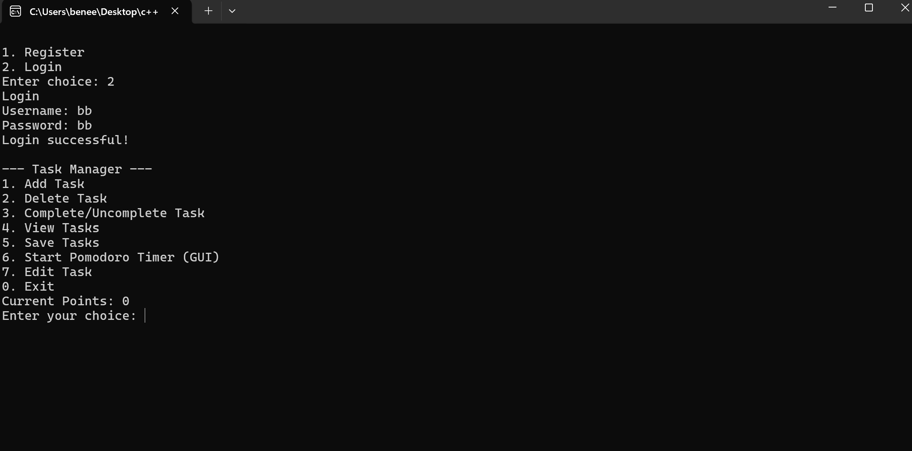 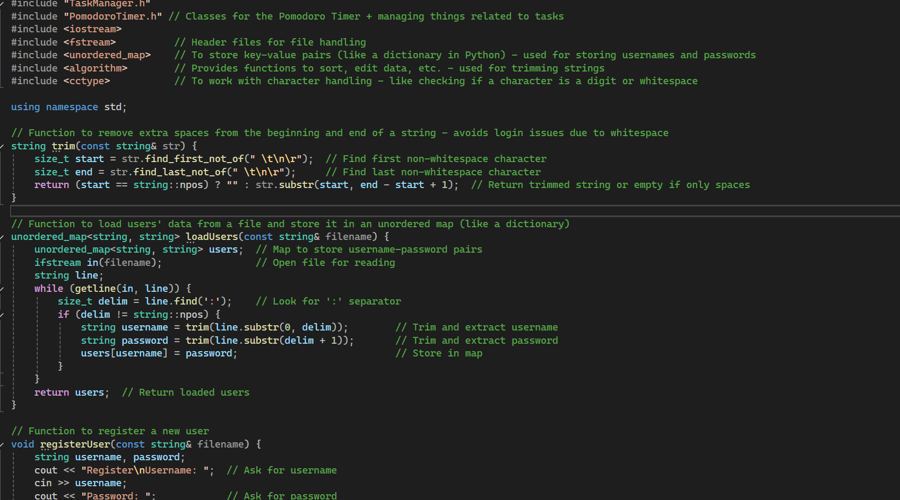CPD Activity: C++ Full Course for Beginners – YouTube
Date Completed: February 2025
Time Spent: 20+ hours
Overview: This beginner-friendly course provides a thorough introduction to C++ programming, assuming no prior experience. It guides learners from basic syntax and data types to object-oriented programming and foundational concepts like memory management, arrays, and loops.
Key Topics Covered:
Course Duration: Approximately 6 hours
Next Steps: After completing the course, it is recommended to explore advanced topics such as Vectors, Polymorphism, the Standard Template Library (STL), Smart Pointers, and modern C++23 features.
Access Course: Watch on YouTube
Reflection: This course significantly boosted my confidence in using C++, particularly in understanding how low-level concepts like pointers and memory management tie into software development. The hands-on mini-projects like calculators and games made the learning process engaging and practical. I now feel more comfortable reading and writing C++ code and am excited to apply this knowledge to improve my existing task management project. I'm also motivated to dig deeper into modern C++ features and more advanced topics like the STL and smart pointers.
Example of CPD Activity:
Activity: Developed a Data CSV Quiz Game with Tkinter (Python GUI)
Date: April 2025
Hours Claimed: 8 hours
What did you learn? I developed a Python-based game using Tkinter to read CSV data and create a quiz interface. This project enhanced my skills in Python programming, GUI development with Tkinter, and data handling with CSV files.
Next Steps: Plan to add more complex features, such as score tracking, and integrate more interactive elements to improve the game.
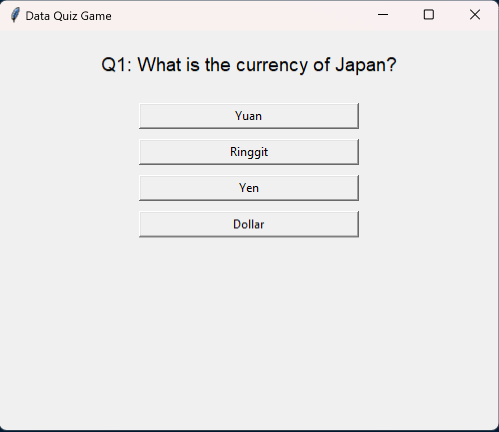 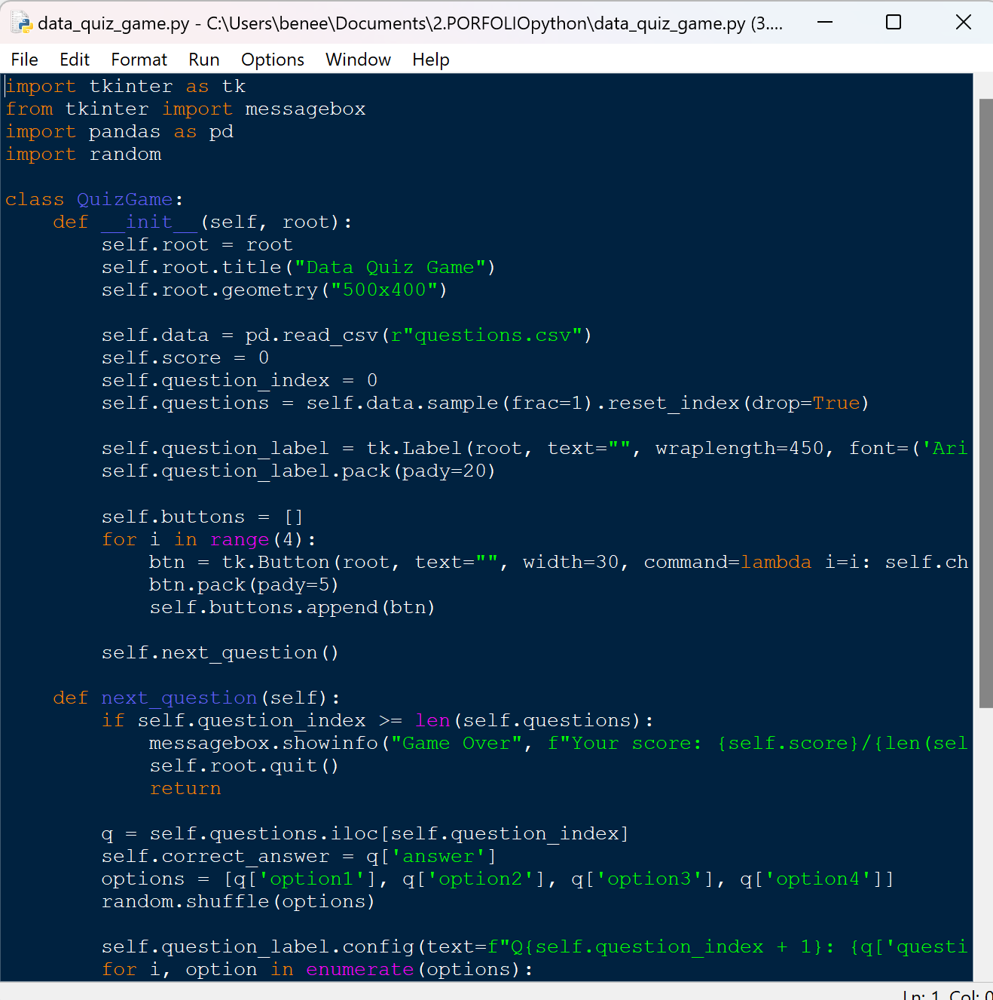Example of CPD Activity:
Activity: Completed an HTML course on Codecademy [View Course]
Date Completed: 22/04/25
Hours Claimed: 5 hours
What did you learn? Gained foundational knowledge of HTML structure, tags, and best practices. Topics included semantic elements, hyperlinks, lists, tables, forms, and structuring content for accessibility and SEO. I also completed multiple interactive exercises and mini-projects to apply the concepts.
Skills Demonstrated:
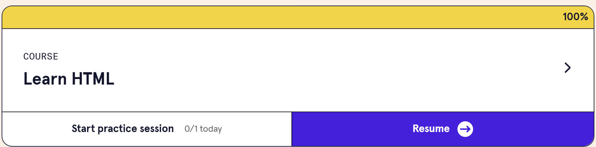Reflection: This course provided a strong starting point for web development and helped me understand how to structure content in a clean, maintainable way. I now feel more confident working with HTML for both academic and personal projects, such as building my portfolio website. It also laid the groundwork for learning CSS and JavaScript to further enhance interactivity and design.
Example of CPD Activity:
Activity: Created a Pomodoro Timer using C++ and the Windows API (WinAPI) with a Graphical User Interface
Date Completed: 17/04/25
Hours Claimed: 5 hours
What did you learn? Designed and implemented a GUI-based Pomodoro timer as part of my Task Management System project. This involved creating and managing windows using the WinAPI, handling button click events and timer intervals, integrating the timer with the system to track focus sessions and award points, and linking it to a game unlocking mechanism.
Skills Demonstrated:
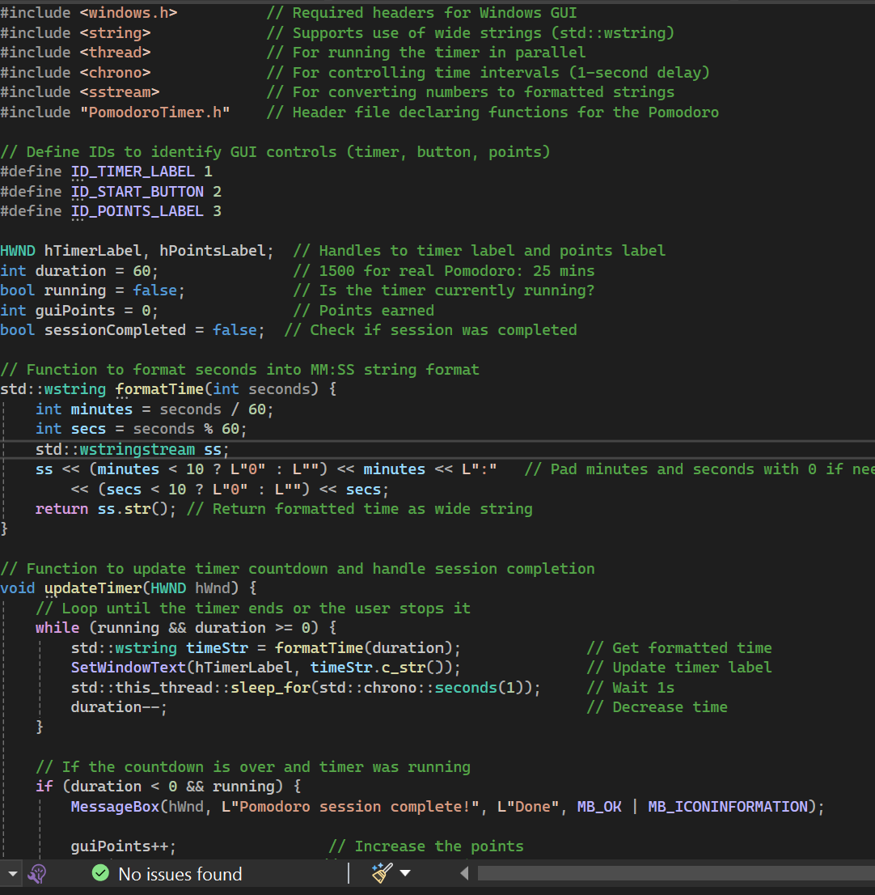 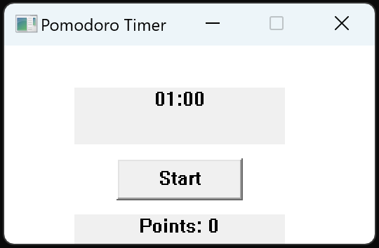Reflection: This task strengthened my understanding of low-level GUI development in Windows environments. It also helped bridge my knowledge between console and GUI applications, enhancing both my programming and user experience design skills.
Example of CPD Activity:
Activity: Set up and implemented unit tests using Google Test (GTest) framework for my C++ Task Management System project
Date Completed: 20/04/25
Hours Claimed: 4 hours
What did you learn? Learned how to install, configure, and use the GTest framework within Visual Studio. This included linking the appropriate libraries, resolving build issues, and writing meaningful unit tests for key features like task creation, completion toggling, and file handling. I also structured my project into testable modules to support maintainability.
Skills Demonstrated:
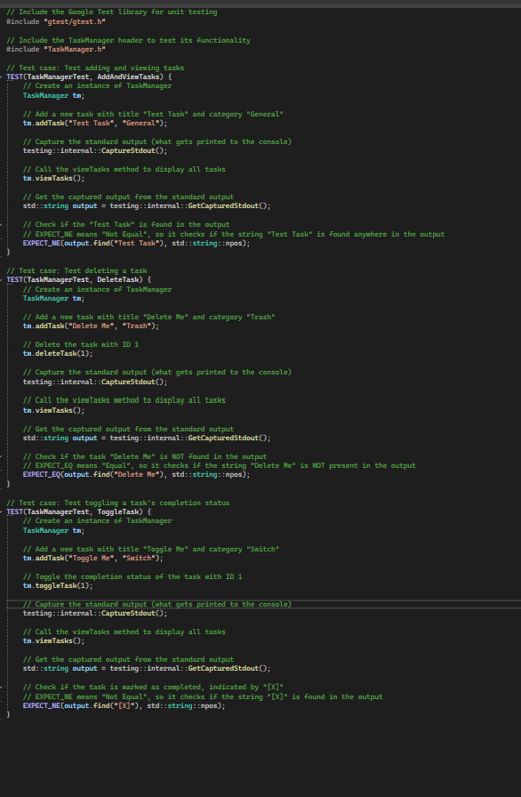 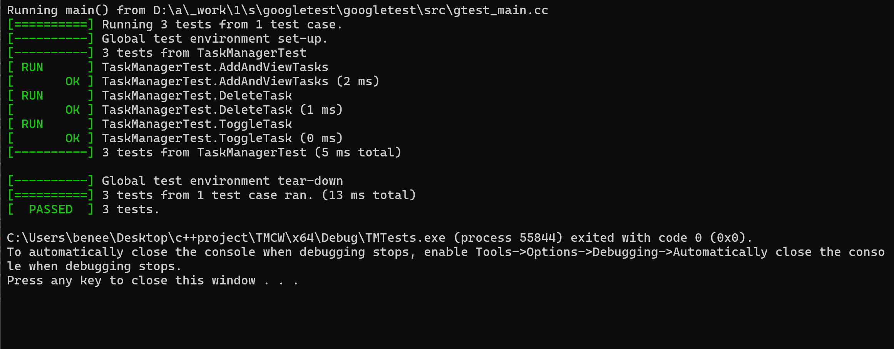 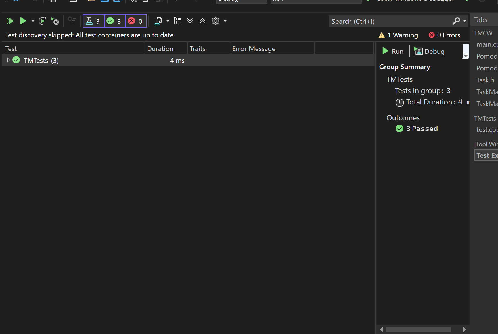Reflection: Working with GTest not only deepened my understanding of C++ project structure and linking, but also highlighted the importance of automated testing. It improved my confidence in maintaining larger projects and encouraged me to write cleaner, more modular code.
Attendance: While I was not able to consistently attend all workshops and lectures, I took responsibility by reviewing materials independently and catching up through recorded sessions and online resources.
Time Management: I’ve been developing better habits by using tools like calendar apps, task managers, and the Pomodoro technique to stay on track with assignments and deadlines. This has helped me manage my workload more effectively.
Communication: I make an effort to engage during lab sessions when present, and I reach out for feedback or clarification when needed to support my learning and improve the quality of my work.
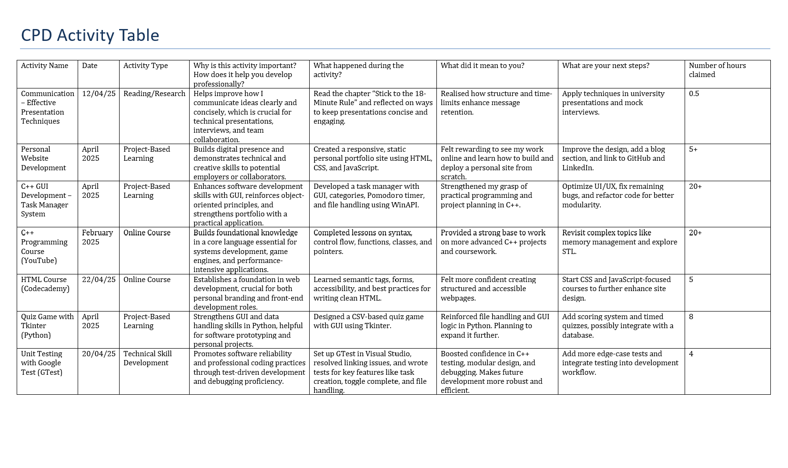